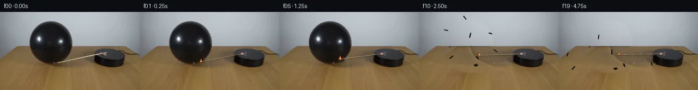

![首帧]()

Round 00
2026-11-05T03:25:39.884165+00:00像素候选变化代码 +275/−0inspection 更新
pixels 47cedebec195f0e2 · code 61f0379c1ae3c977
查看本轮 generate.py 真实 diff
--- previous/generate.py
+++ current/generate.py
@@ -0,0 +1,275 @@
+#!/usr/bin/env python3
+"""Generate a 20-frame, source-anchored balloon/match demonstration."""
+
+from pathlib import Path
+import math
+
+import cv2
+import numpy as np
+from PIL import Image, ImageDraw, ImageFilter
+
+import artifact_io
+
+
+ROOT = Path(__file__).resolve().parent
+W, H = 256, 144
+SCALE = 4
+RNG = np.random.default_rng(113)
+
+
+def clean_original_match(src: np.ndarray) -> np.ndarray:
+ """Remove the source match so a rotated copy can be painted in its place."""
+ mask = np.zeros((H, W), np.uint8)
+ cv2.line(mask, (101, 95), (192, 75), 255, 3, cv2.LINE_AA)
+ cv2.ellipse(mask, (188, 77), (5, 4), 0, 0, 360, 255, -1, cv2.LINE_AA)
+ # Avoid spreading the pink match head into the platform during inpainting.
+ return cv2.inpaint(src, mask, 3, cv2.INPAINT_TELEA)
+
+
+def reconstruct_hidden_background(src: np.ndarray) -> np.ndarray:
+ """Reconstruct the smooth wall and locally textured table behind the balloon."""
+ out = src.copy().astype(np.float32)
+
+ # Fit the gently shaded wall with a quadratic surface from visible wall pixels.
+ yy, xx = np.mgrid[0:63, 0:W]
+ visible = ((xx < 48) | (xx > 138))
+ xs, ys = xx[visible][::3].astype(float), yy[visible][::3].astype(float)
+ A = np.column_stack((np.ones_like(xs), xs, ys, xs * xs, xs * ys, ys * ys))
+ E = np.column_stack((np.ones(W * 63), xx.ravel(), yy.ravel(),
+ (xx * xx).ravel(), (xx * yy).ravel(), (yy * yy).ravel()))
+ wall = np.empty((63, W, 3), np.float32)
+ for c in range(3):
+ coef, *_ = np.linalg.lstsq(A, src[:63, :, c][visible][::3], rcond=None)
+ wall[:, :, c] = (E @ coef).reshape(63, W)
+ wall = cv2.GaussianBlur(wall, (0, 0), 1.4)
+ wall += RNG.normal(0, 0.38, wall.shape).astype(np.float32)
+
+ balloon_wall = (((xx - 93.0) / 42.0) ** 2 + ((yy - 55.5) / 41.5) ** 2) < 1.08
+ soft_wall = cv2.GaussianBlur(balloon_wall.astype(np.float32), (0, 0), 1.2)[..., None]
+ out[:63] = out[:63] * (1.0 - soft_wall) + wall * soft_wall
+
+ # Table fill: interpolate its broad illumination from both sides and carry in
+ # source-matched high-frequency grain from a nearby unobstructed strip.
+ table_blur = cv2.GaussianBlur(src.astype(np.float32), (0, 0), 5.0)
+ residual = src.astype(np.float32) - table_blur
+ tmask = np.zeros((H, W), np.float32)
+ cv2.ellipse(tmask, (99, 82), (52, 30), 0, 0, 360, 1.0, -1, cv2.LINE_AA)
+ cv2.ellipse(tmask, (111, 96), (57, 15), 0, 0, 360, 1.0, -1, cv2.LINE_AA)
+ tmask[:63] = 0
+ tmask[:, 160:] = 0
+ tmask = cv2.GaussianBlur(tmask, (0, 0), 1.25)
+ table_fill = out.copy()
+ for y in range(63, 113):
+ left = np.median(src[y, 36:48].astype(np.float32), axis=0)
+ right = np.median(src[y, 146:159].astype(np.float32), axis=0)
+ for x in range(45, 161):
+ u = np.clip((x - 47) / 107.0, 0.0, 1.0)
+ broad = left * (1.0 - u) + right * u
+ # A shifted clean grain sample keeps the replacement from looking flat.
+ grain = residual[y, max(2, x - 39)] * 0.52
+ table_fill[y, x] = broad + grain
+ tm = tmask[..., None]
+ out = out * (1.0 - tm) + table_fill * tm
+
+ # Restore a crisp but still photographic rear table edge.
+ for y in (62, 63, 64):
+ mix = [0.15, 0.72, 0.35][y - 62]
+ target = wall[min(y, 62)] if y == 62 else out[y]
+ out[y, 47:160] = out[y, 47:160] * (1.0 - mix) + target[47:160] * mix
+ return np.clip(out, 0, 255).astype(np.uint8)
+
+
+def hi_overlay(base: np.ndarray):
+ bg = Image.fromarray(base).convert("RGBA").resize((W * SCALE, H * SCALE), Image.Resampling.BICUBIC)
+ layer = Image.new("RGBA", bg.size, (0, 0, 0, 0))
+ return bg, layer, ImageDraw.Draw(layer, "RGBA")
+
+
… diff truncated; 188 more lines …